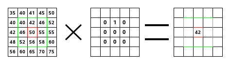

Este é um domínio dos matemáticos. Um grande número de filtros usa a matriz de convolução internamente - como os de desfocagem, nitidez, mapa de relevo, dentre outros. Com o filtro de matriz de convolução, se tiver imaginação para tal, você poderá criar um filtro personalizado.
O que é uma matriz de convolução? É possível ter uma ideia melhor disso sem precisar usar ferramentas matemáticas usadas por poucas pessoas. Convolução é o tratamento de uma matriz por outra chamada “núcleo” (kernel).
O filtro de Matriz de Convolução usa uma matriz primária, que é a imagem a ser tratada. Essa imagem é tratada como uma coleção bi-dimensional de pixels em coordenadas retangulares. O núcleo a ser usado vai depender do efeito desejado.
GIMP uses 5×5 or 3×3 matrices. We will consider only 3×3 matrices, they are the most used and they are enough for all effects you want. If all border values of a kernel are set to zero, then system will consider it as a 3×3 matrix.
O filtro analisa cada pixel da imagem sucessivamente. Para cada um deles, que nós vamos chamar de “pixel inicial”, o valor desse pixel será multiplicado pelo valor dos 8 pixels ao redor do mesmo pelo valor correspondente na matriz núcleo. Esses nove valores são adicionados e se tornam o valor final daquele pixel. Esta operação é feita em cada um dos canais de cor, no caso de uma imagem RGB(A).
Um exemplo simples:

Na imagem da esquerda está a imagem matriz: cada pixel com seu valor próprio. O pixel inicial está entre as bordas vermelhas. O núcleo atua na área com bordas verdes. Na imagem do meio está o núcleo, e a direita é o resultado da convolução.
Isso é o que acontece: o filtro lê sucessivamente, da esquerda para a direita e de cima para baixo, todos os pixels da área de ação do núcleo. Ele multiplica o valor de cada um deles pelo valor correspondente do núcleo e depois soma os resultados. O pixel inicial se tornou um 42: (40*0)+(42*1)+(46*0) + (46*0)+(50*0)+(55*0) + (52*0)+(56*0)+(58*0) = 42. (o filtro não trabalha diretamente sobre a imagem, mas sim em uma cópia). Para o resultado ser visível, o pixel inicial foi movido para baixo do pixel resultante.

- Presets, “Input Type”, Clipping, Blending Options, Preview, Merge filter, Split view
-
![[Nota]](images/note.png)
Nota Essas opções são descritas em Seção 2, “Recursos comuns”.
- Matriz
-
This is the 5×5 kernel matrix: you enter wanted values directly into boxes.
- Divisor
-
The result of previous calculation will be divided by this divisor. You will hardly use anything else than 1, which leaves results unchanged, and 9 or 25 according to matrix size, which gives the average of pixel values. The divisor can only be changed when Normalize is unchecked.
- Deslocamento
-
This value is added to the division result. This is useful if result may be negative. This offset may be negative. It can only be changed when Normalize is unchecked.
- Canais
-
Here you can select which channels the filter should change.
- Normalize
-
Se esta opção estiver marcada, o Divisor pegará o valor resultante da convolução. Se o resultado for zero (não é possível dividir por zero), então um valor de deslocamento de 128 será aplicado. Se ele for negativo (um valor de cor negativo não existe), então um valor de deslocamento de 255 será aplicado (o resultado será invertido).
- Considerar pesos do canal alfa
-
Se esta opção não estiver marcada, então o filtro não levará em conta os valores do canal de transparência, o que pode criar alguns artefatos durante o processamento.
- Borda
-
When the initial pixel is on a border, a part of the kernel is outside the image. You have to decide what the filter should do:
- None
-
This part of the kernel is not taken into account.
- Clamp
-
Os pixels das bordas não serão modificados, mas sim recortados.
- Loop
-
This part of the kernel will be affected by pixels of the opposite border, so pixels disappearing from one side reappear on the other side.
- Black
-
Pixels on borders are changed to black.
- White
-
Pixels on borders are changed to white.


A criação de núcleos é baseada em conhecimentos matemáticos, ou de ciência da computação, de alto nível. Você pode encontrar núcleos prontos na internet (procure pela expressão em inglês: “Convolution kernel”). Veja alguns exemplos: